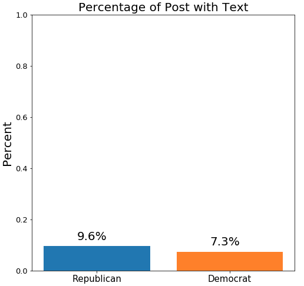
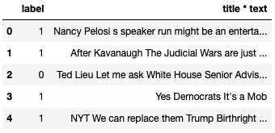
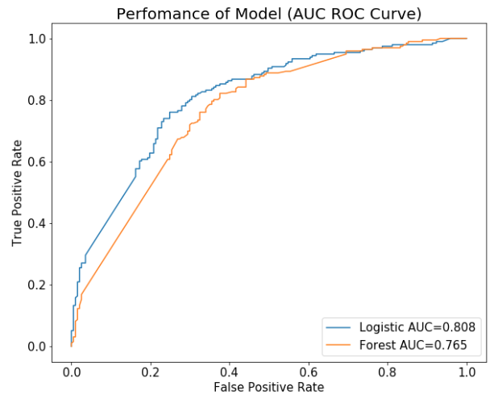
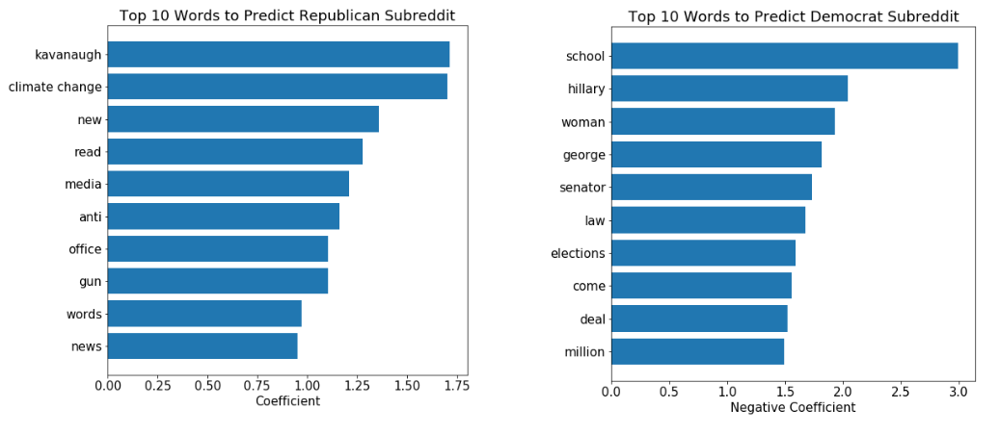
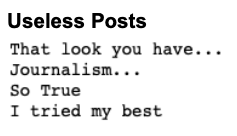

Classifying Republican and Democrat Subreddits
Introduction
Reddit is an American social news aggregation, web content rating, and discussion website founded by Steven Huffman and Alexis Ohanian in 2005. Registered members submit content to the site such as links, text posts, and images which are organized by subject into user-created boards called "subreddits". Since there are many subreddits covering a variety of topics including news, science, movies, music, and image-sharing, creating a system that could classify posts into each different subreddits might be helpful in the future. In order to demonstrate the filtering system, I obtained the data (title and text) from republican and democrat subreddit and created a classifying model using natural language processing combining with machine learning algorithms.
Obtaining the Data
There were two approaches to obtain the data. The first option was to use web scraping method which is a technique employed to extract large amounts of data from the website. The other option was to use Reddit's application programming interface (API) which is a set of tools to request necessary data from the database. I chose the API method because web scraping is slower than API call and difficult to analyze. So, in order to use API, I had to obtain the API keys from Reddit Developed Application. In addition, I used the Python package called PRAW (Python Reddit API Wrapper) built by Bryce Boe to obtain the clean title, text and label for each subreddit posts.
Missing Data

I was able to get 980 posts from the Republican subreddit and 989 posts from the Democrat subreddit. However, there were many posts with missing text. Only 9.6% of republican posts had text and 7.3% of democrat posts with text. Without text, there is nothing to analyze and use natural language process. So, one of the solutions was to make a new variable which combines the title and the text.
Data Cleaning

Even though the use of PRAW package helped to obtain clean data, there were some problems to clean before using natural language process. The problem in the title or text was the URL links and numbers. Since the model should analyze words, the title and text should not have any numbers, URL links, and punctuation. So, I used regex to remove all of the unnecessary items. In addition, the labels are changed to numbers (Democrat: 0, Republican: 1).
Natural Language Process
Natural Language Process is a method to convert words into numbers in order to process and analyze large amounts of natural language data. I used Countvectorizer and TF-IDF methods which are simple and basic methods in natural language process. Countvectorizer provides a simple way to both tokenize a collection of text documents and build a vocabulary of known words. TF-IDF (term frequency-inverse document frequency) provides statistics that is intended to reflect how important a word is to a document in a collection. The graph above shows the most popular words for both methods.
Selecting Model
The three machine learning methods I chose were Logistic Regression, Naive Bayes and Radom Forest. Logistic regression was the most basic classification method and has interpretability. Naive Bayes is known to work well with the natural language process. Random Forest is one of the top ensemble learning methods that is known to produce high accuracy. The graph shows all three model for both Countvectorizer and TF-IDF performs about the same, but train/test accuracy of the Logistic regression and Random Forest classifier are similar which means that the model generalizes well to unseen data.
Tuning the Models
I decided to pick the Logistic regression and Random Forest classifier models to tune for higher accuracy. For Random Forest with TF-IDF vectorizer, I used grid search on different parameters like max features, ngram range, min df and max depth. The best parameters were
- max feature: 456
- ngram range: (1,2)
- min df: 2
- max depth: 11
For Logistic regression with TF-IDF vectorizer, I used grid search on parameters like max features, ngram range, min df and C (inverse of regularization strength). The best parameters were
- max feature: 244
- ngram range: (1,2)
- min df: 3
- C : 1
- penalty : L1
Final Model

The impact of predicting the Republican post as Democrat post (True Negative) or vice versa (False positive) are the same. So, the model with high accuracy regardless of true negative and false positive misclassification is the best model in this case. Therefore, the model that is closest to the top left corner of this plot (best accuracy) is the Logistic regression model.
With Logistic regression, I can analyze the coefficients of the model and investigate which words have a positive or negative influence. In this case, positive coefficients help to predict Republican post and negative coefficients help to predict Democrat posts.
Further Research
Looking into some misclassified posts, there were some posts that could come from both side of subreddit. Just looking at the example above, it is almost impossible to figure out which side of the subreddit the post is from.
In addition, there were posts that just did not contain enough information to classify.
In conclusion, I was able to obtain the data from Reddit and use natural language process in order to build a classification model. The best model was the Logistic regression model that produced train accuracy of 0.767 and test accuracy of 0.748. For more detail analysis and code, Check out my Github